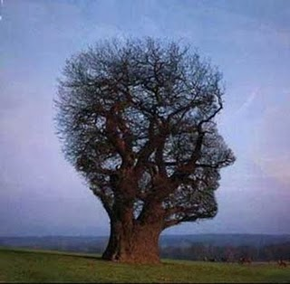

Encuadres

Los seres humanos somos unos avaros cognitivos, tratamos de pensar lo menos posible. No es algo que se me ocurra a mi, es lo que plantean muchos sicólogos cognitivos. Uno de los atajos mentales que ocupamos es el encuadre (framing).
El encuadre es un esquema de interpretación, una colección de anécdotas y estereotipos en los que nos basamos para entender o responder ante distintos eventos. Durante nuestro crecimiento desarrollamos una serie de filtros mentales emocionales, los que usamos posteriormente para darle sentido al mundo que nos toca vivir. Estos filtros mentales toman forma de narrativas simples.
Todas las narrativas complejas están compuestas de narrativas más pequeñas con estructuras muy simples. Estas estucturas simples se conocen como “cuadros” (frames). Los cuadros son un tipo de estructura cognitiva, un mecanismo que usamos para pensar. Por ejemplo, cuando leemos un misterio policial, hay un marco, o cuadro, típico con varios tipos de caracteres: el asesino, la víctima o víctimas, los posibles cómplices, los sospechosos, el motivo, el arma asesina, el detective, las pistas, y un escenario, donde el asesino mata a sus víctimas y es posteriormente detenido por el detective.
Se ha descubierto que los cuadros (“frames”) son estructuras cognitivas que requieren un circuito neural bastante simple. Jerome Feldman argumenta en su libro “From Molecule to Metaphor” (De la Molécula a la Metáfora) que las combinaciones de “nodos triangulares” son suficientes para caracterizar las propiedades computacionales de un cuadro. Cada nodo es una colección pequeña de neuronas que forman un circuito. En un nodo triangular hay tres de esos circuitos, y al activar dos nodos cualquiera se activa el tercero. Hay un nodo de control que activa este proceso. Nuestro cerebro usa estos cuadros en muchos de nuestros procesos mentales.
Los cuadros se han descrito en varios campos. Los sociólogos han descubierto que todas las instituciones están estructuradas como cuadros. Los lingüistas han descubierto que las palabras están definidas a partir de cuadros conceptuales. Los grupos de palabras relacionadas, conocidas como “campos semánticos”, se definen con respecto a un mismo cuadro. Palabras como “costo”, “venta”, “bienes”, “precio”, “compra”, etc, se definen con respecto al mismo cuadro, que describe los eventos comerciales. Incluso se ha descubierto que la comprensión física de un objeto puede ser observada a un nivel neuronal que toma la forma de la estructura de cuadros.
Las estructuras de cuadro se encuentran también en todas las narrativas. Es fácil encontrarlas en los relatos mitológicos o del folclore, y en todos los prototipos culturales. En todas estas narrativas tenemos, una serie de “roles semánticos”, como los caracteres principales, las acciones y los instrumentos.

Rama rescatando a Sita del demonio Rávana
Consideremos la “narrativa del rescate”. Los caracteres son el Héroe, la Victima, el Villano, los Ayudantes. El Héroe es inherentemente bueno, el Villano inherentemente malo. Las acciones principales forma un escenario: “Las Fechorías, cometidas por el Villano contra la Víctima. Las dificultades que debe superar el Héroe. La Batalla del Héroe contra el Villano, la Victoria del Héroe sobre el Villano, el Rescate de la Víctima por parte del Héroe, el Castigo al Villano, la Recompensa al Héroe. Las Fechorías trastornan el orden moral. La Victoria, el Rescate, el Castigo y la Recompensa restauran el orden moral.
No importa si la historia es sobre Rama, Hércules, o Batman, se usa la misma estructura. Esto es lo que se conoce como una “narrativa profunda”, y es la que establece una serie de prototipos culturales. Hay muchos de estos prototipos, el martir, el pícaro, el vividor, etc.
Entonces, ¿qué es lo que permite que el cerebro combine estas narrativas simples para crear nuevas narrativas? ¿cuál es el mecanismo que nos permite identificar los distintos roles semánticos en distintas narrativas? ¿qué permite que el cerebro aplique una forma general a un caso especial?
La respuesta es el “enlace neuronal” (neural binding). Por ejemplo, cuando ves un cubo azul, lo percibes como un objeto único, pero en realidad el color y la forma son registradas en distintas partes del cerebro. El enlace neuronal nos permite juntar estas activaciones neuronales, en distintas partes de nuestro cerebro, para formar un todo integrado.
Hay diversas teorías que tratan de explicar como funciona este mecanismo. Lo importante es que no es algo mágico, requiere la interacción de distintos circuitos de neuronas activándose simultáneamente en nuestro cerebro. Estos enlaces neuronales son los que van conformando las distintas experiencias. La repetición de estos enlaces una y otra vez en nuestro cerebro van creando patrones que van quedando “grabados” en nuestro cerebro. Cuando enfrentamos situaciones nuevas, nuestro cerebro recurre a este almacén de experiencias almacenadas, produce asociaciones. Es el mecanismo más económico para nuestro cerebro. Cuando no encuentra nada análogo, entonces recién forma un nuevo circuito que quedará grabado en nuestro cerebro para futuro uso.
El enlace neural es importante para entender la estructura temporal de una narrativa. Incluso las narrativas más simples tienen una estructura que se activa en el tiempo una y otra vez, en las etapas siguientes:
-
Precondiciones, el contexto previo, requerido por la narrativa.
-
La Construcción, los eventos que llevan al evento central.
-
El Evento Central, el tema de la narrativa, de que se trata la narrativa.
-
El Propósito, lo que se obtiene (si es que hay algún propósito).
-
La Conclusión, los eventos que finalizan la narrativa.
-
El Resultado, el contexto final, y
-
Las Consecuencias Posteriores
Hay variaciones, pero esta es la estructura típica de una narrativa simple. Esta es una estructura que es conocida como el “esquema de ejecución”, en el campo del modelamiento neural computacional. Los informáticos reconocerán una similitud con los casos de uso, usados en el desarrollo de software.

El Sistema Límbico
Los enlaces neurales pueden crear experiencias emocionales. De hecho a nivel del sistema límbico, la parte del cerebro más primitiva en términos evolutivos, hay dos circuitos emocionales con distintos neurotransmisores. El de las emociones positivas (felicidad, satisfacción), conocido como el circuito de la dopamina. Y el de las emociones negativas (temor, ansiedad y la ira), el circuito de la norepinefrina. Hay vías en el cerebro que enlazan estos circuitos emocionales con el prosencéfalo, el cerebro anterior, donde al parecer se encuentran localizados los circuitos dramáticos.
Así que las narrativas se tiñen de un alto contenido emocional. Sientes temor cuando el héroe es amenazado, rabia cuando el villano realiza sus fechorías, y satisfacción y placer cuando el héroe rescata a la víctima.
Esto también pasa en la experiencia política, que tiene una forma de narrativa. Te sientes exaltado cuando tu candidato gana la elección, o cuando lidera, y deprimido cuando pierde. La narrativa política es una narrativa básica del héroe. Tu cerebro cae en la trampa de la analogía. La circuitería que caracteriza el triunfo del héroe (=tu candidato) está neuronalmente enlazada con el circuito de la dopamina, lo que produce los sentimientos positivos cuando se activa.
Las narrativas y los cuadros (frames) no sólo son estructuras intelectuales, sino que tienen un contenido intelectual-emocional integrado. Es la circuitería del enlace neural el que provee esta integración.
Todo esto del encuadre (framing) es un tanto complejo, pero es importante para entender lo que exploraremos en los próximos artículos, donde veremos como estos mecanismos explican ciertas formas de manipulación a la que podemos vernos expuestos, en distintos planos, desde la publicidad hasta la política.
Fuentes:
-
Encuadres, Wikipedia.
-
The Political Mind, George Lakoff, principalmente el capítulo 1.
-
From Molecule to Metaphor, Jerome Feldman.
Fuente de las imágenes: metáforas tomada de este post. La imagen de Rama fue tomada de acá. Imagen del sistema límbico tomada de Wikipedia.